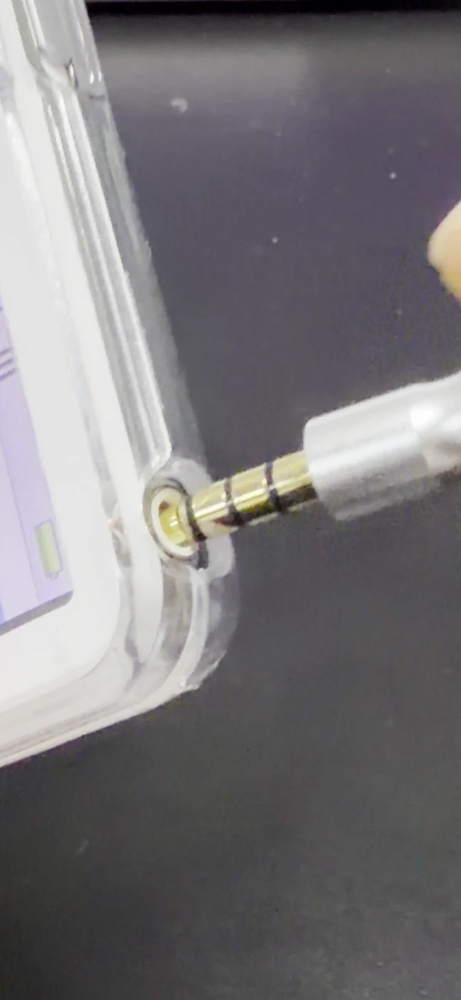
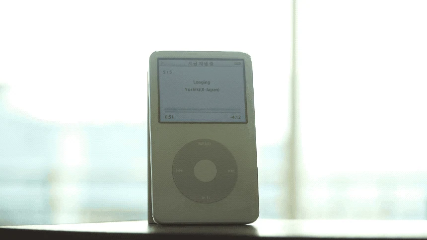
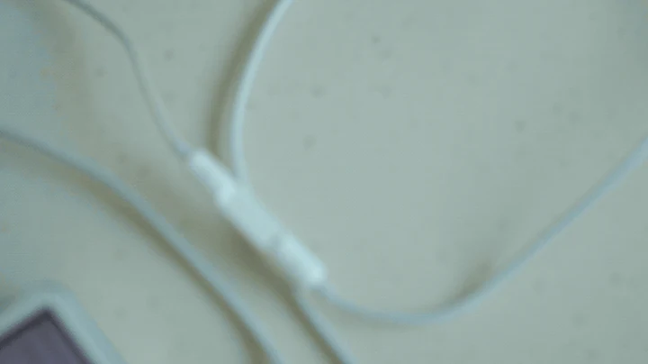
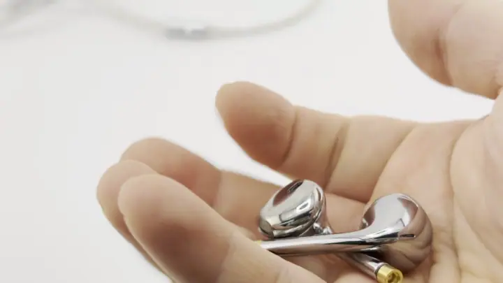
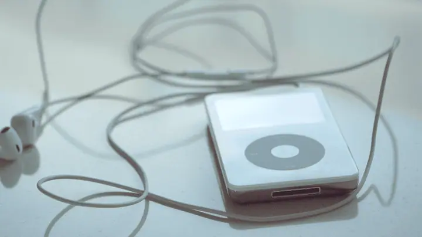
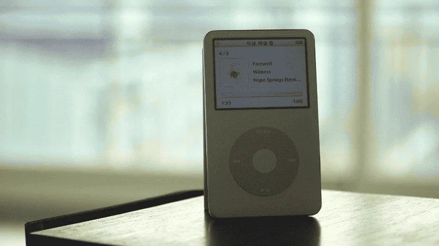

iPod
그때는 못 샀지만
이제는 살 수 있지
아이팟 클래식 5세대 64GB

딸깍.불편합니다.
그래서 갖고 싶습니다.

지금 봐도 아이팟은 예뻐요
아이팟 클래식.
다시.


손가락으로 돌려 보세요
- 0°
 144°
144° 360°
360°
- 0°앞은 화면.
- 72°옆은 두께.
- 144°뒤는 거울.
- 330°한 바퀴 돌았습니다. 아직 안 질립니다
얼굴이 비치는
뒷판, 그대로.

엄지로 돌립니다.
딸깍.
휠을 돌려 보세요.

선을 꽂아야
소리가 납니다.
그게 좋습니다.



시간이 지나도
탁월한 음질.

스트리밍 없음.
알림 없음.
곡은 직접 담습니다.

약 10,000곡
64GB = 약 1만 곡 (MP3 한 곡 약 6MB 기준)

PEPPER CLUB
남기는 건
메인보드와
프레임뿐.
버튼 붙은 메인보드와 프레임만 남기고,
나머지는 전부 새것으로 다시 만듭니다

실제 작업 사진 · 리퍼 제품
원래는 약 400~580mAh
배터리 KC 안전확인은 저희 비용으로 받았습니다

실제 배터리
두 번 켜 보고
보냅니다.
만든 직후 한 번, 출고 때 한 번 더

실제 작업 사진 · 켜서 확인한 화면
앞뒤판은 새것
저장장치는 SSD, 표기 용량 그대로 읽고 씁니다
이게 전부
기본 구성입니다.
따로 사실 것 없이 다 갑니다

비디오 세트(5세대)
- 본체
- 박스
- 설명서
- 필름
- 30핀 케이블
- 이어폰
- 충전 독스탠드별도 포장
- 크리스탈 케이스별도 포장
충전 겸용 독스탠드와
크리스탈 케이스까지 기본
이렇게 챙겨 주는 곳은 저희가 찾아본
국내 판매처 중엔 없었습니다
싼 건
싼 값을 합니다.
받는 날·검수·반송, 여기서 갈립니다
| 해외직구 (일반적인 조건) | 페퍼클럽 | |
|---|---|---|
| 배터리 | 원래 약 400~580mAh | 직접 KC 안전확인 받은 1950mAh, 새것 |
| 저장 | 판매처마다 다름 | SSD 표기 용량 그대로 |
| 받는 날 | 10일~3주 | 국내에서 바로 발송 |
| 구성 | 판매처마다 다름 | 본체·박스·설명서·필름·30핀 케이블·이어폰·충전 독·크리스탈 케이스 |
| 받은 뒤 | 해외 반송·소통 어려움 | 7일 교환·환불, 180일 무상 A/S |
| 검수 | 확인 어려움 | 6칸 직접 점검 |
기다릴 수 있으면 직구,
국내에서 바로 받으려면 페퍼클럽입니다
고장 나면
제가 고칩니다.
7일 교환·환불, 180일 무상,
그 뒤 평생 실비(부품값·공임만)
환불
7일이 지난 뒤 왕복 택배비 7,000원은 고객 부담입니다
문의는 톡톡 QR로 받습니다
자주 묻는 질문
이어폰·독이 들어 있나요?
본체·박스·설명서·필름·30핀 케이블, 이어폰·독스탠드·크리스탈 케이스까지 기본으로 들어 있습니다. 따로 사실 것 없이 다 갑니다.
배터리는 얼마나 가나요?
사양 기준 음악 재생 최대 약 32시간입니다. 1950mAh 새 배터리를 넣어 보냅니다.
A/S는 어떻게 하나요?
7일 교환·환불, 180일 무상 A/S, 그 뒤 평생 실비 수리(부품값·공임만)입니다. 남긴 메인보드·프레임까지 포함해 180일 무상입니다. 문의는 톡톡 QR로 받습니다.
교환·환불이 되나요?
7일 교환·환불이 됩니다. 7일이 지난 뒤 왕복 택배비 7,000원은 고객 부담입니다.
마음에 드셨다면,
지금 담으세요.
평일 15시 전 주문하면 당일출고
7일 교환·환불, 180일 무상 A/S
와디즈 5억+ · 후기 1,200건+
페퍼클럽 네이버 스마트스토어로 이동합니다
페퍼클럽은 Apple의 공식 판매처가 아닙니다. Apple, iPod는 Apple Inc.의 상표입니다. 사진 속 제품에 새겨진 로고는 제품 자체의 표기입니다.